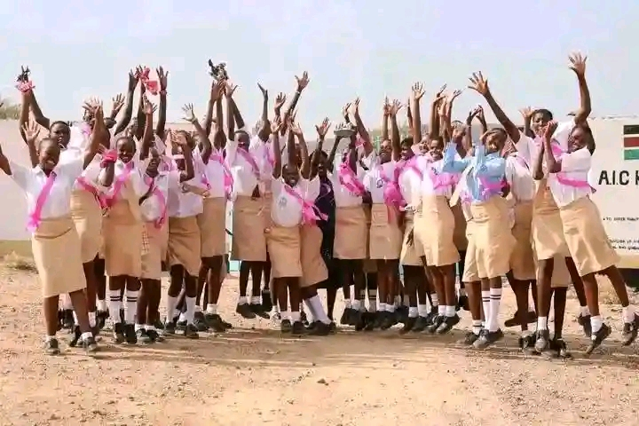
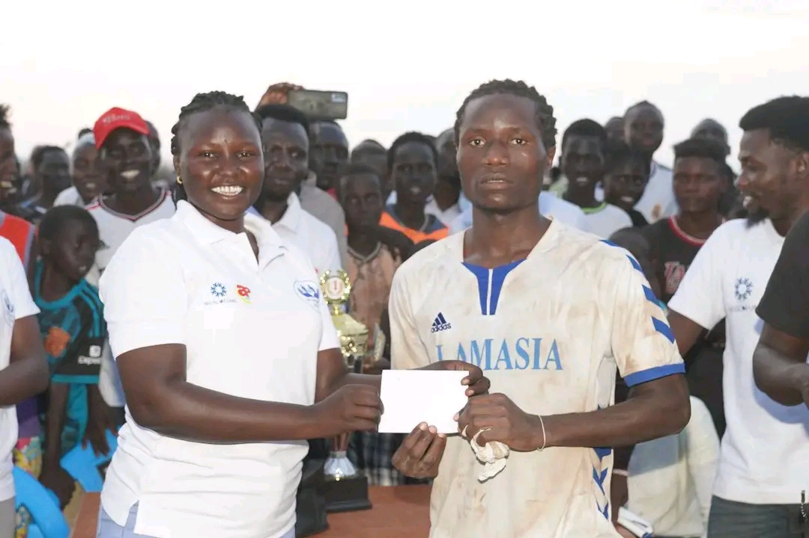
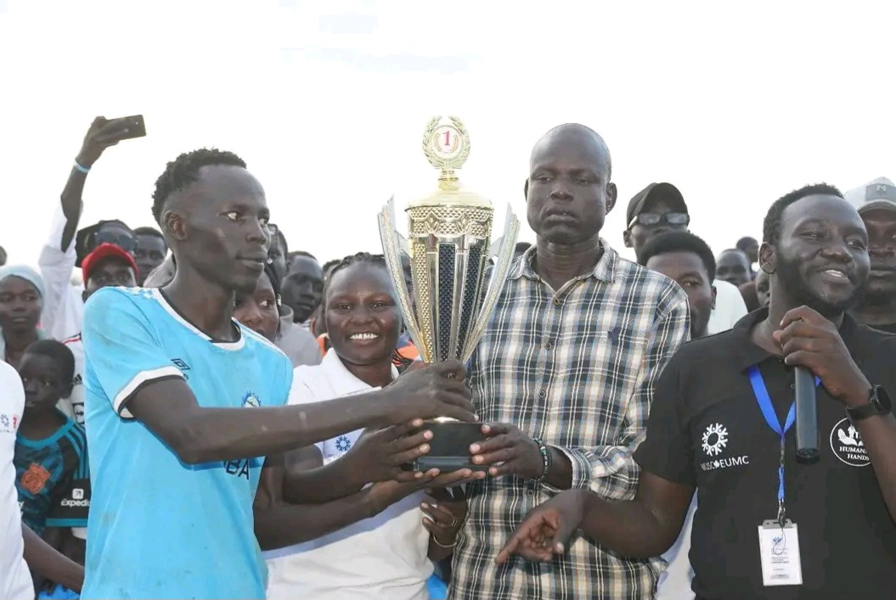

Lira Youth Iniative is a Community-abased Organisation established in 2025 in kamkuma Refugee
camp.
LIRA stands for Leadership Impact Resilicence Action. we are a diverse group of young people
committed to building peace and a proud community.
we run eduction programs, Digital skills workshop, leadership trainings, Monitoring circles, and sport activities. we organize community events and create safe space for young people to learn and grow.

Kakuma is a place of reselince and hope, but many youth face limited resource uncertainity. Our programs gives youth tools, confidence and opportunities so they can build better lives and strong community. Empowered youth lead to lasting peace and intergebnerational change.
Peace. Unity. Pride. Togetherness. Teamwork.

A united nad empowered where youth lead with strength, purpose and hope.
To empower young people through education, leadership, sports, and community engagment, building peace, unity and lasting change in kakuma.
Lira Youth Iniative is a Community-abased Organisation
established in 2025 in kamkuma Refugee
camp.
LIRA stands for Leadership Impact Resilicence Action. we are a diverse group of young people
committed to building peace and a proud community.
we run eduction programs, Digital skills workshop, leadership trainings, Monitoring circles, and sport activities. we organize community events and create safe space for young people to learn and grow.
Kakuma is a place of reselince and hope, but many youth face
limited resource uncertainity.
Our programs gives youth tools, confidence and opportunities so they can build better lives and strong
community.
Empowered youth lead to lasting peace and intergebnerational change.
Peace. Unity. Pride. Togetherness. Teamwork.
A united nad empowered where youth lead with strength, purpose and hope.
To empower young people through education, leadership, sports, and community engagment, building peace, unity and lasting change in kakuma.